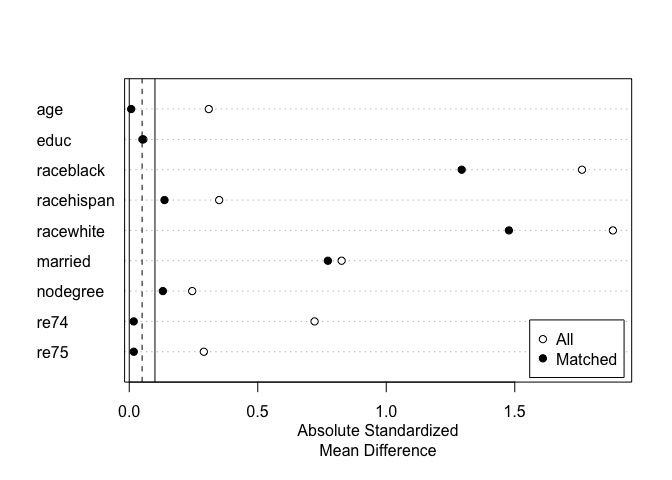

Overview
MatchIt provides a simple and straightforward interface to various methods of matching for covariate balance in observational studies. Matching is one way to reduce confounding and model dependence when estimating treatment effects. Several matching methods are available, including nearest neighbor matching, optimal pair matching, optimal full matching, generalized full matching, genetic matching, exact matching, coarsened exact matching, cardinality matching, and subclassification, some of which rely on functions from other R packages. A variety of methods to estimate propensity scores for propensity score matching are included. Below is an example of the use of MatchIt to perform Mahalanobis distance matching with replacement and assess balance:
library("MatchIt")
data("lalonde", package = "MatchIt")
# 1:1 nearest neighbor matching with replacement on
# the Mahalanobis distance
m.out <- matchit(treat ~ age + educ + race + married +
nodegree + re74 + re75,
data = lalonde, distance = "mahalanobis",
replace = TRUE)Printing the MatchIt object provides details of the kind of matching performed.
m.out#> A matchit object
#> - method: 1:1 nearest neighbor matching with replacement
#> - distance: Mahalanobis
#> - number of obs.: 614 (original), 260 (matched)
#> - target estimand: ATT
#> - covariates: age, educ, race, married, nodegree, re74, re75We can check covariate balance for the original and matched samples using summary():
#Checking balance before and after matching:
summary(m.out)#>
#> Call:
#> matchit(formula = treat ~ age + educ + race + married + nodegree +
#> re74 + re75, data = lalonde, distance = "mahalanobis", replace = TRUE)
#>
#> Summary of Balance for All Data:
#> Means Treated Means Control Std. Mean Diff. Var. Ratio eCDF Mean eCDF Max
#> age 25.8162 28.0303 -0.3094 0.4400 0.0813 0.1577
#> educ 10.3459 10.2354 0.0550 0.4959 0.0347 0.1114
#> raceblack 0.8432 0.2028 1.7615 . 0.6404 0.6404
#> racehispan 0.0595 0.1422 -0.3498 . 0.0827 0.0827
#> racewhite 0.0973 0.6550 -1.8819 . 0.5577 0.5577
#> married 0.1892 0.5128 -0.8263 . 0.3236 0.3236
#> nodegree 0.7081 0.5967 0.2450 . 0.1114 0.1114
#> re74 2095.5737 5619.2365 -0.7211 0.5181 0.2248 0.4470
#> re75 1532.0553 2466.4844 -0.2903 0.9563 0.1342 0.2876
#>
#> Summary of Balance for Matched Data:
#> Means Treated Means Control Std. Mean Diff. Var. Ratio eCDF Mean eCDF Max Std. Pair Dist.
#> age 25.8162 25.5622 0.0355 0.6540 0.0461 0.1838 0.4827
#> educ 10.3459 10.4270 -0.0403 1.1635 0.0077 0.0378 0.1963
#> raceblack 0.8432 0.8432 0.0000 . 0.0000 0.0000 0.0000
#> racehispan 0.0595 0.0595 0.0000 . 0.0000 0.0000 0.0000
#> racewhite 0.0973 0.0973 0.0000 . 0.0000 0.0000 0.0000
#> married 0.1892 0.1784 0.0276 . 0.0108 0.0108 0.0276
#> nodegree 0.7081 0.7081 -0.0000 . 0.0000 0.0000 0.0000
#> re74 2095.5737 1788.6941 0.0628 1.5689 0.0311 0.1730 0.2494
#> re75 1532.0553 1087.7420 0.1380 2.1220 0.0330 0.0865 0.2360
#>
#> Sample Sizes:
#> Control Treated
#> All 429. 185
#> Matched (ESS) 32.94 185
#> Matched 75. 185
#> Unmatched 354. 0
#> Discarded 0. 0At the top is balance for the original sample. Below that is balance in the matched sample, followed by the percent reduction in imbalance and the sample sizes before and after matching. Smaller values for the balance statistics indicate better balance. (In this case, good balance was not achieved and other matching methods should be tried). We can plot the standardized mean differences in a Love plot for a clean, visual display of balance across the sample:

Although much has been written about matching theory, most of the theory relied upon in MatchIt is described well in Ho, Imai, King, and Stuart (2007) and Stuart (2010). The Journal of Statistical Software article for MatchIt can be accessed here, though note that some options have changed, so the MatchIt reference pages and included vignettes should be used for understanding the functions and methods available. Further references for individual methods are present in their respective help pages. The MatchIt website provides access to vignettes and documentation files.
Citing MatchIt
Please cite MatchIt when using it for analysis presented in publications, which you can do by citing the Journal of Statistical Software article below:
Ho, D. E., Imai, K., King, G., & Stuart, E. A. (2011). MatchIt: Nonparametric Preprocessing for Parametric Causal Inference. Journal of Statistical Software, 42(8). doi:10.18637/jss.v042.i08
This citation can also be accessed using citation("MatchIt") in R. For reproducibility purposes, it is also important to include the version number for the version used.